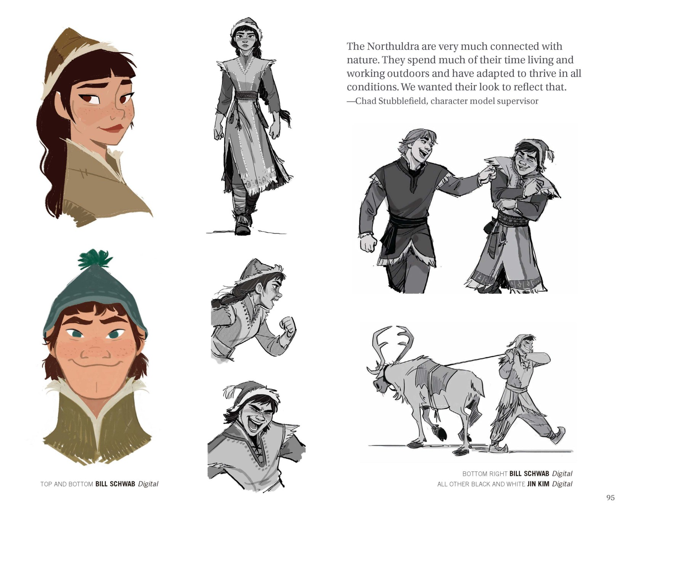
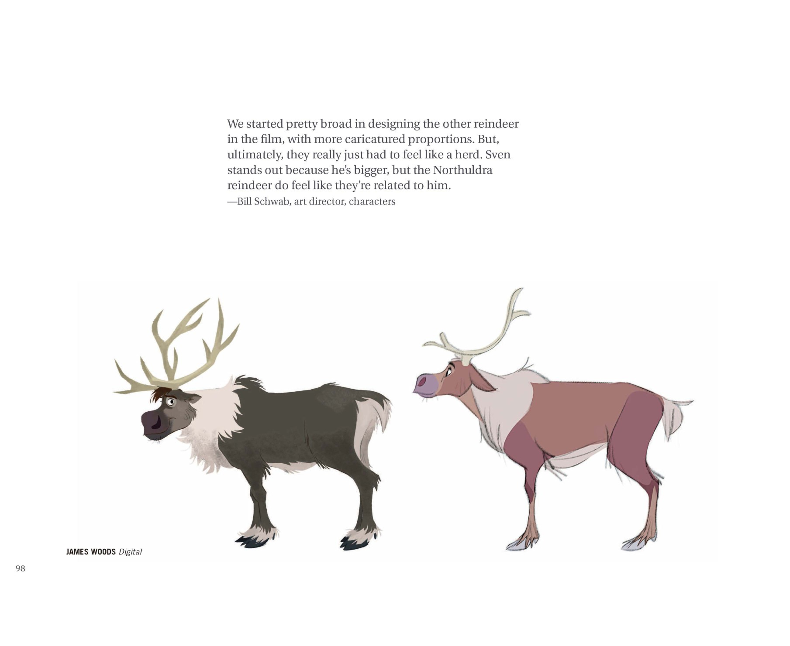
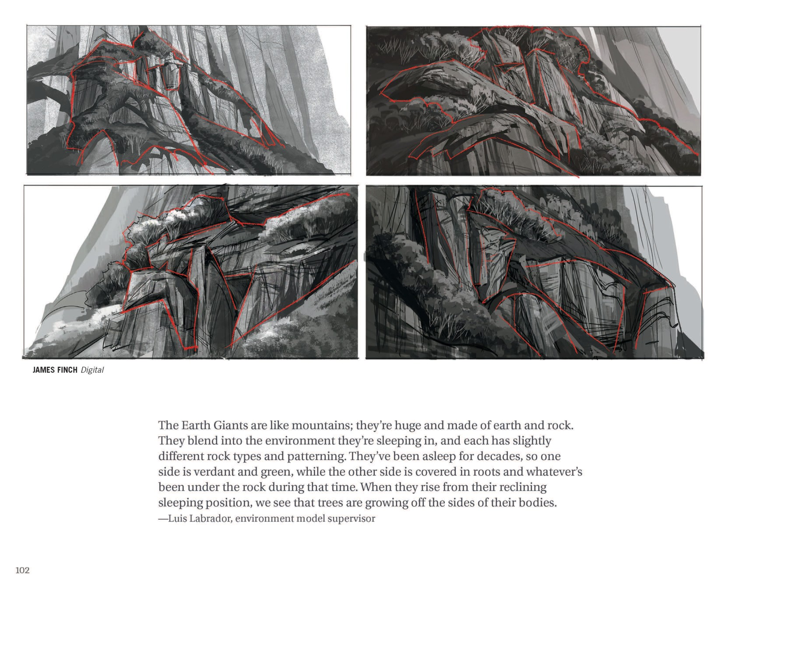
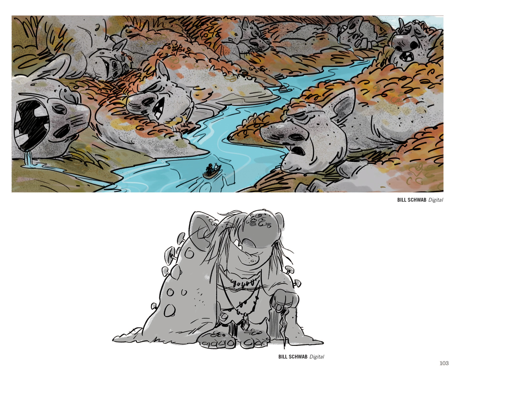
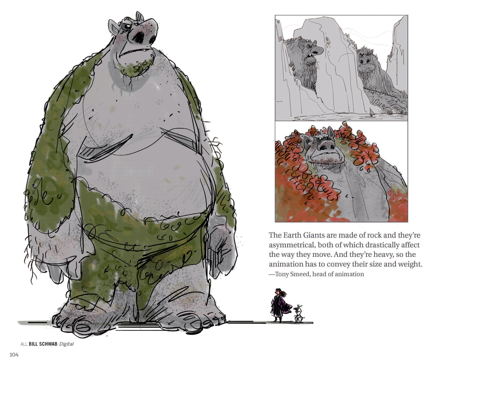
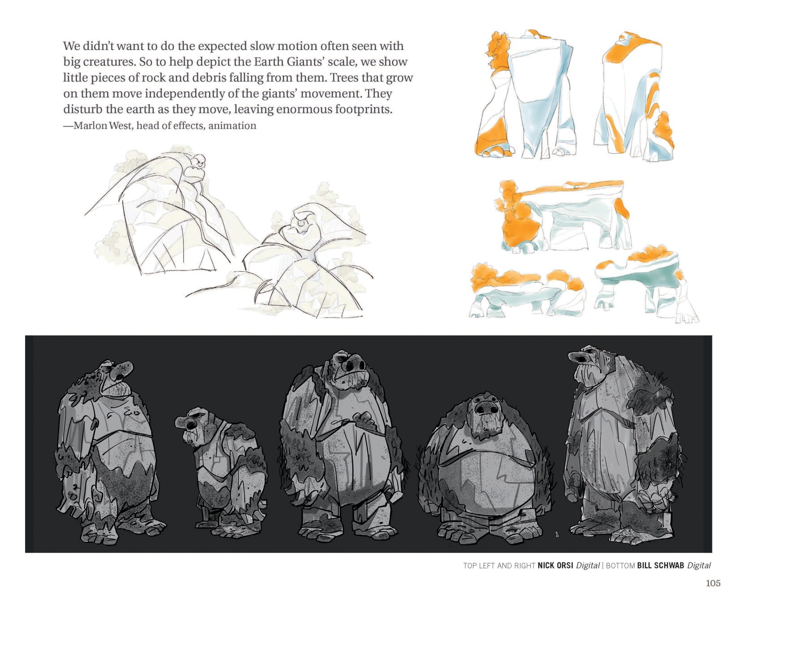

📖 设定集 · F2设定集
F2 图版 · 地之灵与北地民族
F2 官方设定集图版 · p094–p109
5
本卷页数
🎨
设定集
中/英
双语
🖼️ F2 官方设定集 · 原书图版
F2 图版 · 地之灵与北地民族
《The Art of Frozen II》（Jessica Julius, Chronicle Books 2019） p094–p109
12
图版
p094–p109
原书页码
原书
扫描原图
笔记
逐页图注
🗿 Part Three「Earth」：北地部族领袖叶拉娜、Honeymaren 与 Ryder 的设定，Northuldra 的驯鹿与族人群像，以及「半角色半环境」的大地巨人——四肢故意长短不一、根系作为关节。
🗿 Part Three: Earth · Earth Giants（p094–p109）

第三部分：EARTH（土之地灵章节起始页）
1. "第三部分 / EARTH（大地）"（F2设定集原页）

"PART THREE: EARTH"章节内页
该图为纯环境氛围概念画，没有访谈或文字批注；呈现灰岩台地、秋季阔叶林、湖水与远山的层次。（F2设定集原页）

"PART THREE: EARTH"章节内（角色设定：Honeymaren and Ryder）
1. "HONEYMAREN 与 RYDER"（F2设定集原页）

Northuldra 章节内（紧接前一页 Northuldra 角色介绍）
引用说明：北境人与自然紧密相连，长期户外生活与劳作，使他们的外观必须能反映这一点。角色图由 Bill Schwab（彩色头部及右下牵驯鹿形象）与 Jin Kim（其余黑白稿）绘制。展示多位 Northuldra 女性、男性及儿童的造型、服饰、表情与体态。（F2设定集原页）

Northuldra 章节内（动态/动作设计）
引用说明：北境人是爱好和平的民族，但他们的动作兼具运动感与迅捷度，区别于其他角色。由 Bill Schwab、Jin Kim 分别绘制。（F2设定集原页）

Northuldra 章节内（驯鹿设计）
引用说明：北境人驯鹿设计最初走夸张路线，最终要呈现"群落感"。Sven 因体型更大而突出，北境人驯鹿需与 Sven 有"亲缘感"。插画署名 James Woods。（F2设定集原页）

Northuldra 章节内（驯鹿群）
俯视图展示驯鹿围拢成圆圈的典型栖息场景；下方四只驯鹿呈现从大到小的家族结构（成鹿、亚成鹿、两只小鹿）。插画署名 Justin Cram。（F2设定集原页）

Earth Giants 章节内（环境与设计稿）
整页一幅全幅插画展示大地巨人"沉睡"时的状态——他们的脸庞与身体完全融入崖壁，被植被覆盖。署名 James Finch。（F2设定集原页）

Earth Giants 章节内（草图/形态探索）
引用说明：大地巨人如山岳般巨大，由土石构成，沉睡时与环境融合；每只岩石类型和纹理略有不同；沉睡了数十年，因此一侧青翠、另一侧被根系与地下物覆盖；起身时身体两侧长着树木。署名 James Finch。（F2设定集原页）

Earth Giants 章节内（概念与角色草图）
上图揭示 Northuldra 神话中"沉睡的岩石"的视觉化设定：小船在巨人鼻息间穿行。下图带饰物坐姿的草图暗示早期设计中大地巨人可能拥有文化/信仰层面的装饰物。署名 Bill Schwab。（F2设定集原页）

Earth Giants 章节内（角色设定）
引用说明：大地巨人是岩石构成且不对称的生物，这两点直接影响他们的动作方式；由于体量巨大，动画必须表现出其体型与重量感。署名 Bill Schwab。（F2设定集原页）

Earth Giants 章节内（动作探索）
引用说明：避免大型生物常见的慢动作俗套；通过①掉落的碎石残屑、②与巨人动作独立运动的身上树木、③震撼大地、留下巨大脚印来表现尺度。署名 Nick Orsi（上）与 Bill Schwab（下）。（F2设定集原页）
💡 图注说明
本页全部图版为《The Art of Frozen II》（Jessica Julius, Chronicle Books 2019）原书扫描（原图复制，未压缩），图注（中文标题 + 要点首句）逐页取自官方设定集中文笔记，点击图片可查看原尺寸扫描。
📌 本页要点
你正在阅读《设定集》卷的「F2 图版 · 地之灵与北地民族」。本页由电影正典、官方设定集与官方小说综合梳理，可作为该主题的速查入口；右侧目录可快速跳转到本页各小节。